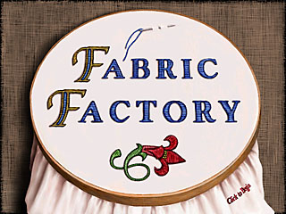

Fabric Factory

Location: Family Center, 1st Floor (107).
Fabric Factory is a program that introduces young people to some of the
primary techniques associated with textile production. You can make your
own weaving, dye fabrics with colors derived from natural sources, deisgn
a quilt, and much more. The five areas are highly interactive, making
learning about textiles fun. Older children and adults may also want to
seek out Material Witnesses: Textiles
at The Minneapolis Institute of Arts.